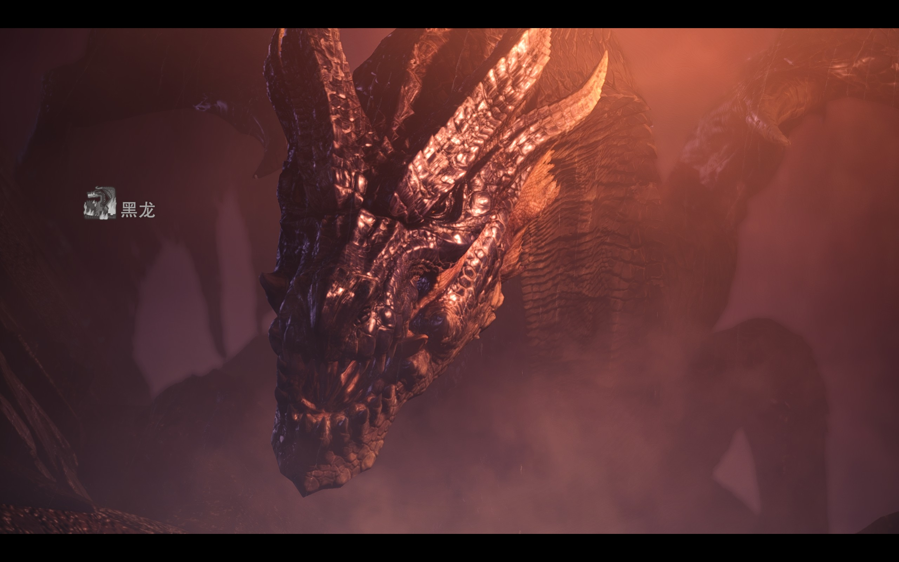
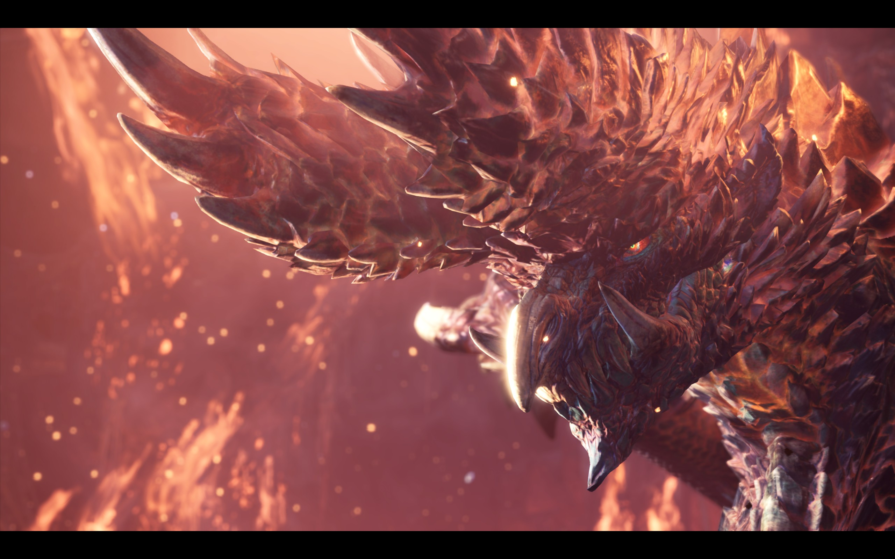
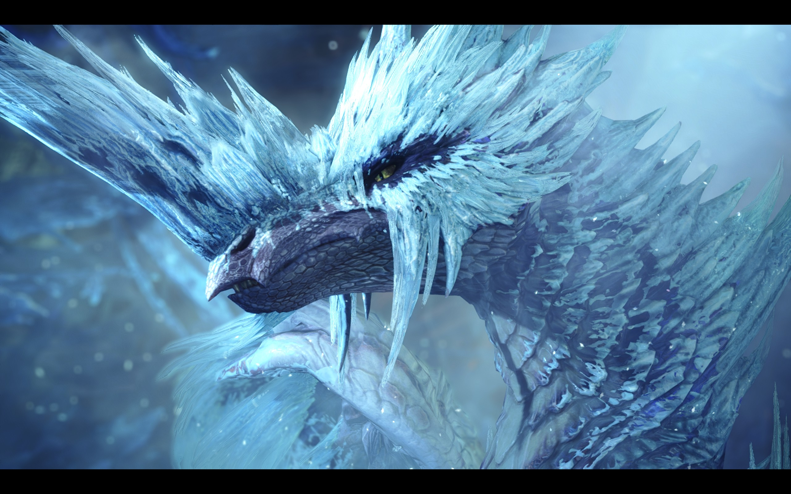
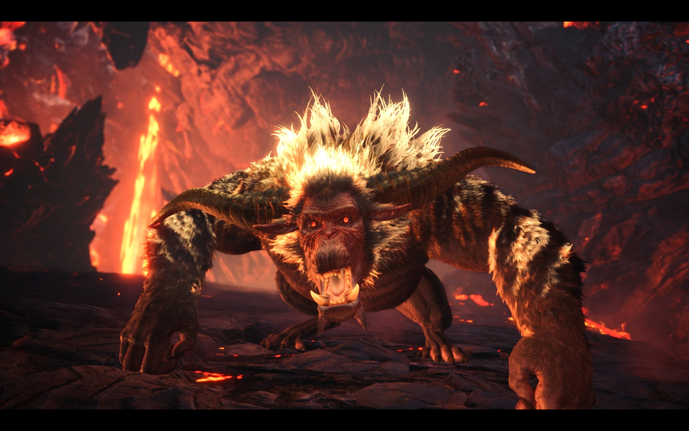

|  | 黑龙 外号 米拉小姐 学名 米拉波雷亚斯 |
《黑龙传说》 当无数飞龙尽为驱驰时 传说拉开序幕 数不尽的肉体被撕裂 骨血被粉碎吸干 它就会出现 尘土为之燃烧 钢铁为之融化 水流为之蒸腾 风起云涌 草木荒芜 炽烈重生 其名曰 米拉波雷亚斯 其名曰 宿命的战争 其名曰 无可避免的死亡 若有喉便狂啸吧 若有耳便倾听吧 若有心便祈祷吧 米拉波雷亚斯 天地为之颠覆 念诵它的名 天地为之颠覆 念诵它的名 念诵它的名…… 存在于远古故事中的传说之龙。一夜之间毁灭了某个繁盛一时的王国后， 就栖息在该国王城之中。现已成为禁止进入的危险区域。 |
|  | 煌黑龙 外号 羊驼 学名 艾尔巴特利恩 |
曾有大量的船只与飞行船在经过神域时遭到事故，乘客大多下落不明，对 此猎人公会对事故做出的解释是“火山喷发时的火山岩弹和瓦斯爆炸造成了一系列事故”，并 将神域划分为禁飞区域，但是遇难的船只却呈现出了各不相同的惨状，有 的如同被风暴撕碎，有的曾被烈火引燃，有的遭到雷电袭击，有的被冰霜覆盖，此 等令人不可思议的情景一度引起了人们的恐慌。就在此等恐慌的气氛之下，开 始有人声称在神域中见到了作为神域之主的古龙，但是对于古龙的样貌，“目击者”们各执一词，有 的声称古龙的身躯十分漆黑，有的声称古龙闪耀着白光，有的则称古龙全身散发着岩浆般的红色光芒，在 各方人马的争执告一段落后，“煌黑龙”这个名字开始在世间流传。 为了调查神域以及传说的真相，猎人公会派遣了一支由怪物猎人和王立书士队成员组成的调查团，乘 坐飞船前去进行考察，但是最终调查团失联，只有一名书士队员留下的日志被一名地质学家发现并得到复原， 猎人公会这才通过日志的内容对神域以及神秘古龙“煌黑龙”的信息有所了解。为了避免引起更大的恐慌， 猎人公会决定封锁有关神域和煌黑龙的信息，并将煌黑龙列为超高危险度目标。 |
|  | 冰咒龙 外号 冰冰子 学名 依维尔卡娜 |
冰呪龙的嘴如同鸟喙一般，深蓝色的皮肤上覆盖着冰蓝色的甲壳， 壳中存在着一种特殊的矿物质，头顶长着一对向后弯曲的龙角， 尾巴的顶端如同刺剑一般，宽大的翅膀为冰呪龙提供了极强的飞行能力与机动性， 使冰呪龙能够以各种动作飞行，无论相貌还是姿态都十分绚丽。 冰呪龙的体内存在着储存过冷却水的器官， 可以依靠这个器官来喷发寒气吐息，或是降低周围环境的温度， 使空气中的水分凝结成冰。冰呪龙的甲壳之间还存在着较为微小的孔洞， 当冰呪龙兴奋时 ，过冷却水会从孔洞中流出并在冰呪龙的矿物质甲壳上形成一层华丽的冰之铠甲， 头部也会显现出王冠一般的冰之巨角。 冰呪龙还会将岩浆包裹在自己的身上并用超低温将岩浆凝结成“火山玻璃”作为外壳，因 此冰呪龙也会较为频繁地前往火山地带。 |
|  | 金狮子 外号 猿神 学名 拉加恩 |
金狮子的外观类似猩猩与狮子的结合体，有着猩猩般的健壮体格和面部、 一对坚硬的大角和狮子般的茂密鬃毛，其大角乃是雄性力量的象征， 同时和水牛般的尾巴一样是情绪的控制器。 金狮子的身体颜色为深棕色，外加其体型并不算大，平均体长只有12米， 因此乍看之下是个很不起眼的普通怪物。但在“变身”为斗气化的状态下， 金狮子全身的鬃毛都会因电属性能量的汇聚而闪耀金光，让 人闻风丧胆，“金狮子”之名便来源于此。 金狮子体内存在着循环的电能， 但金狮子自如操控体内电属性能量的能力则是通过后天因素获得的， 只有吃下麒麟的苍角，吸收麒麟角中的电解质才能激活金狮子体内的电能，使 金狮子获得放电和斗气化的能力。 点击这里返回 |